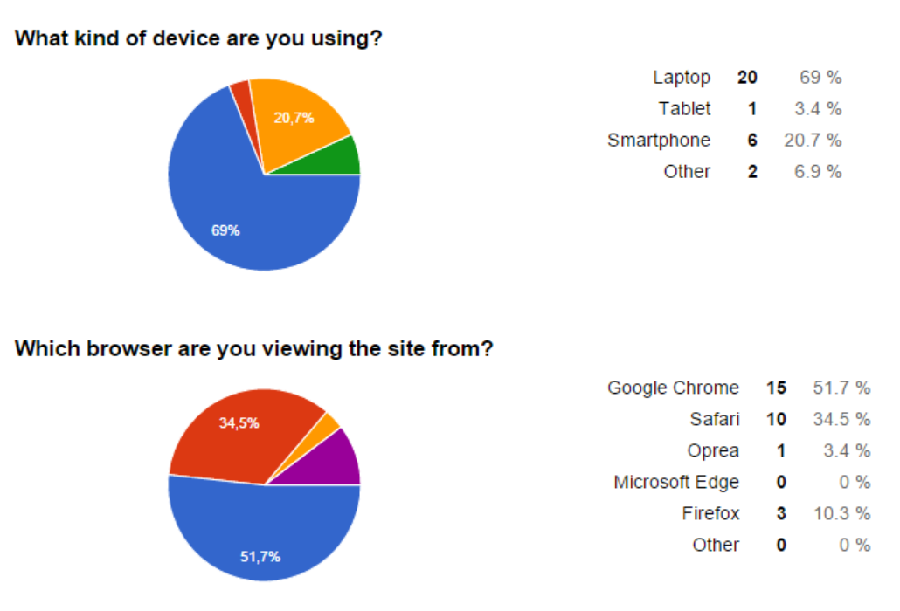
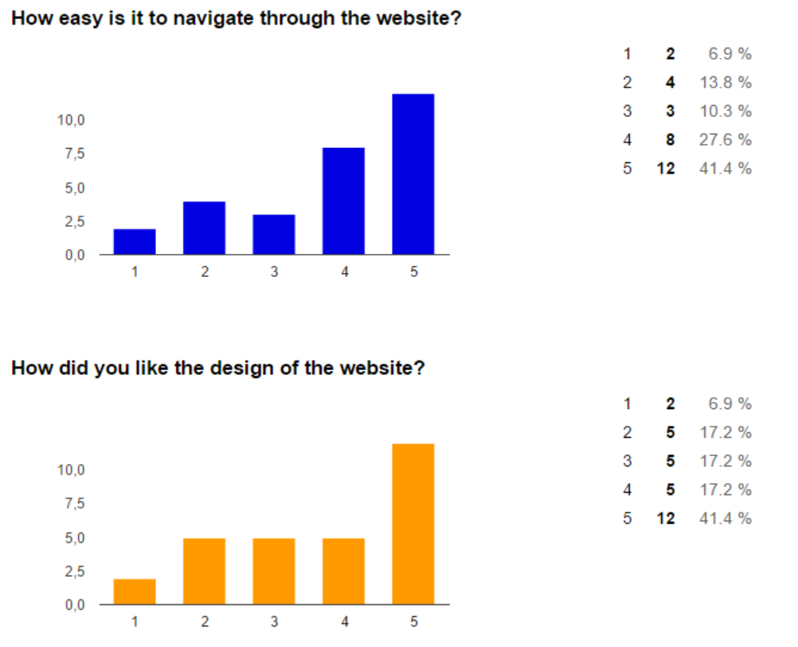

Eirik Kaldahl, Egil Uggerud, Edvard Sjøblom, Simen Johansen, Cornelius Dahling - 16. November 2015
Our client is Spa Thai, located in Olav Tryggvasons Gate 50 in Trondheim.
They deliver different treatments/massages and spa-related products.
Contact person: Suban Andestad (suban@spathai.no)
Rolle: Daglig leder
We decided to use both live testing and anonymous testing for our tests. Our main focus was on live testing, because here we used actual clients from the target group. The anonymous testing was more to get a preview of simple statistics about dsign, browser-support and the general feel of the site, which everyone could answer, not just our target group.
The live testers were asked to go through all the pages, and find information about hotstone treatment, how much it costs and what it is. They were also asked to look for something they didn't like or wanted done better.
The google form testers was asked four questions:This was to make general statistics about the regular user.
Link to Google formAs written earlier, we decided to focus on live testers. Since our group lives in an apartment above our client, Spa Thai, we contacted them and made an agreement that they would give us a call each time they had a customer on saturday(14.11.2015) and sunday(15.11.2015). When they called we sent down one of the group members with a laptop and asked kindly if the customer wanted to be a part of a test. This way we got information from the real target group, the people looking for massage. Out of the 6 customers they had over the weekend we got 4 of them to test our website. The testers were a couple (male, 41 years old and female, 38 years old), a male, 64 years old and another male, 71 years old. We also got the manager for Spa Thai to test the website.
For the anonymous google form we didn't ask for age/gender, but we shared the form of facebook, so we can only assume that it was our friends that participated. This is also fine, because the google form only was for general statistics.
We have tested the website on our own in all the major browsers and devices using inspect element and then the device-emulator(in chrome, testing for different resolutions). In the live testing, we only used Google Chrome and laptop, while the anonymous tests shows a variety of platforms. The diagrams below shows statistics from our google form:
The diagrams below shows the results we got on the anonymous tests:
As shown above, the testers looks quite statisfied with the website in general.
The live testers gave alot of different response. Since there was only 4 testers we will elaburate what the responses was.
Firstly, the couple tested it together, and gave us alot of good feedback. They managed to find information about the hotstone treatments very easily and loved that the website's color was harmonic and had a "massage-vibe". At the time, they didn't have anything bad to say about the website.
The 71 year old told us that he didn't have much experience with the internet and websites. He was struggling with the basics, like navigation from site to site, but managed to find information about hotstones after a while. He had nothing but good things to say about the site, but also said it wasn't something for him, because he didn't have a computer.
The 64 year old male did also like our page, and managed to find hotstone treatment information fairly easy. Although he meant that our navigationbar got alittle confusing when it changed colors and layout. He said he didn't see the use of it, and that it was "too much".
Spa Thai has also tested our website, and they are very safisfied. There are some problems though. Since we used their existing site (Spathai.no) as information source, we have not gotten all information right. They told us thier site inculdes alot of old information, which is incorrect, and that we need to update the sites content if the are to publish it. Also, they would like an admin login, so they can change content on their own, if for example they have any spesial offers they want to promote.
The customers that live tested our website had some thoughtful criticism that we found interesting. First, we want this site to be appealing to elders. We've spoken to Spa Thai, and they said that the majority of their customers are old. Therefore we need to take the elders opinions into serious thought. One of the men said that the navigationbar was confusing(the rollover-part when scrolling), so we should probably make it smoother or just drop it. The other man was having a hard time dealing with the site, since he didn't have much experience with using the internet in general. If we should continue developing this site, we need to take that into consideration. For example, we could try harder to tell the user where he can and cannot click. Making every pressable item another color, bigger or other things that make the clickable items stand out.
Spa Thai's feedback could be hard to implement, since we don't have any experience creating adminpanels. It's doable, but it could take time to learn how. Rather than that, we don't see any other issues or suggestions that would be difficult to tackle.
These last couple of months we have learned alot of HTML, CSS and Javascript, from the course, the internet and eachother. It has also been a good experience learning how to plan and develop an actual website, not just meaningless code-snippets. We started out with a very small amount of experience combined, but managed to get an endresult we can be pround of. When we started P3(the coding) we felt the need of codesharing/versioncontrol. We decided to use Git, which some of the groupmembers knew. We all learnt how Git worked throughout the project, so that was a good experience for all of us.
When we look back, we didn't really understand how important P1 and P2 was. We didn't quite understand why we needed all the planning. However, we realized that this helped us when we started coding. We learned that when working as a team, it is important that we have well-defined tasks so that we dont work over each other. It was a great way of knowing what to do at all times. In addition, the mockups were really useful as they speeded up the actual development since we didn't have to spend time thinking about layout related issues.
Although we see why P1 and P2 was necessary, it's alot of it we see as unnecessary. The last section in P2 for example, "Work diviosn and deadlines", were not followed. We see how this work in web-developing buisnesses, but for us students if was not working out like planed. We were not able to keep up with all the deadlines as planned.
We also feel that we should have received a feedback for P2 before we started on P3/P4. If we missed something important we have not had a chance to include/fix it. What is the purpose of separate deliveries if no feedback is received in-between? We could just as well have sent in all required documents on the project deadline.